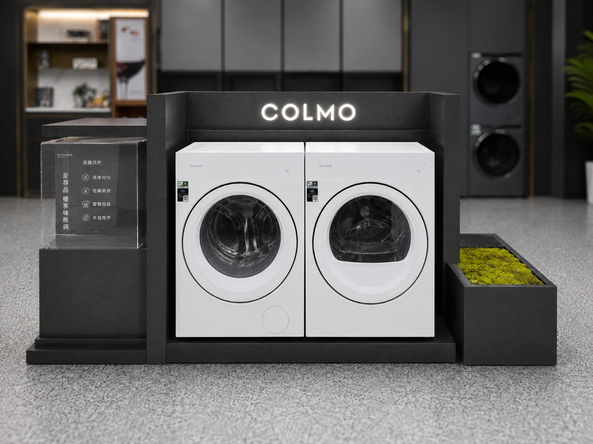
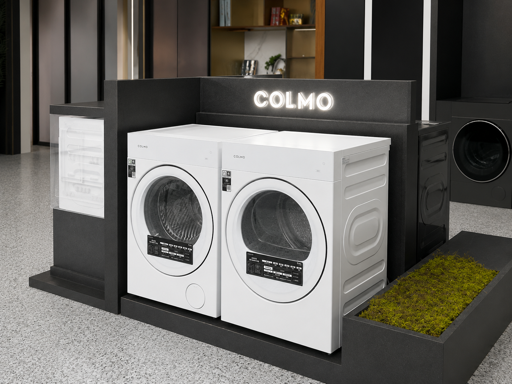
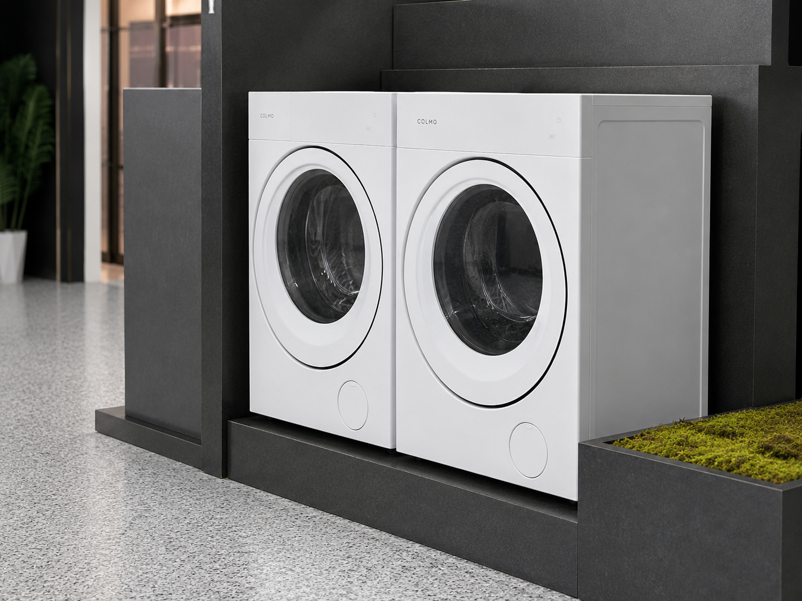
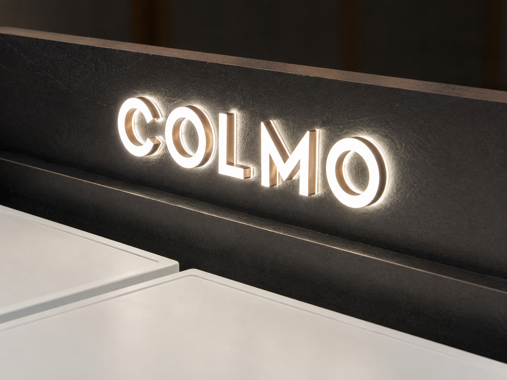
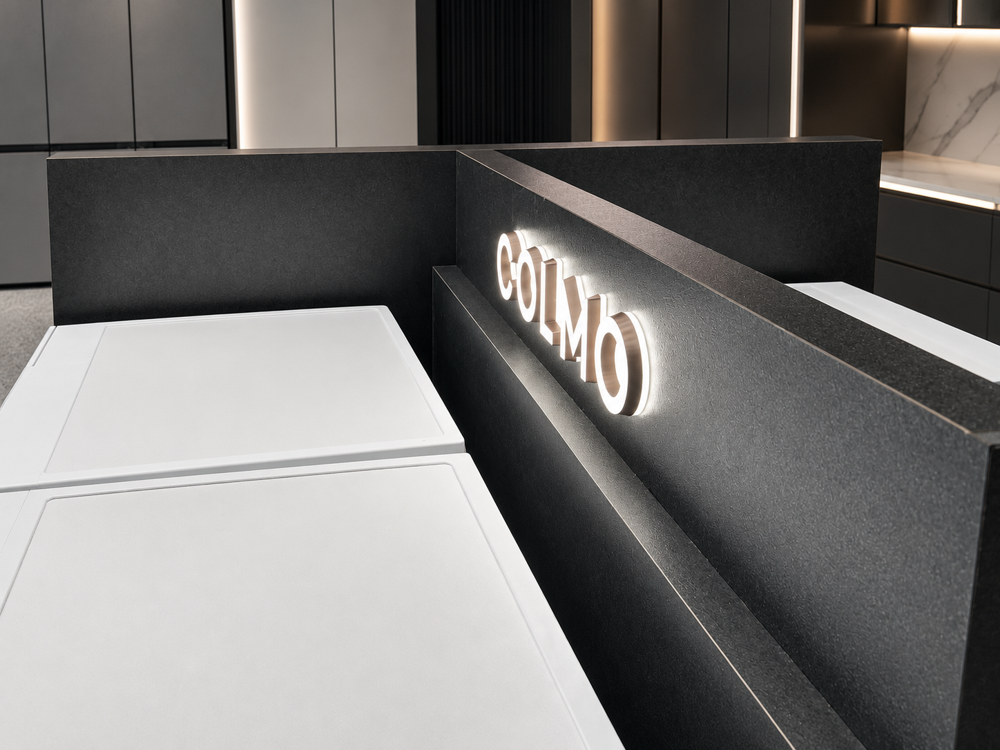

COLMO Laundry Appliance Island Display
A compact appliance island becomes a premium brand touchpoint when product presentation, information and architectural detail are designed as one system.
The COLMO Laundry Appliance Island Display is a custom freestanding retail fixture designed and manufactured by REYI. Two front-facing laundry appliance bays sit within a dark architectural structure, supported by an illuminated COLMO identity, a transparent information module and a planted side element that softens the technical display.

A freestanding island gives a compact laundry display real architectural presence
The complete product is the full COLMO island structure. Two appliances remain clearly visible from the main aisle, while the raised dark surround creates a strong background for the illuminated brand sign. A transparent information module supports product explanation without adding visual weight, and the planted side element introduces a softer material contrast. The result is compact enough for open retail floors but substantial enough to read as a dedicated brand destination.

Four decisions keep the island compact, clear and premium from every approach
Frontal Product Clarity
Two appliance bays face the main customer route directly, supporting immediate product recognition and side-by-side comparison.
Layered Brand Background
The raised dark architectural panels create depth behind the appliances and give the illuminated COLMO lettering a focused visual field.
Transparent Information Module
A clear acrylic display element carries product communication while preserving sightlines through the island and keeping the fixture visually light.
Softened Technical Character
The integrated planting trough adds natural texture and warmth, balancing the precise appliance geometry and dark fabricated surfaces.
The island becomes clear through three controlled details

The paired appliance bays use consistent openings, a shared support plinth and controlled spacing so two products read as one coordinated presentation rather than separate machines.

The illuminated COLMO identity is integrated into the raised dark panel, creating clear brand recognition while revealing the depth, texture and clean edge finishing of the structure.

The angled detail view highlights the illuminated COLMO lettering, dark textured surfaces and clean top-surface transitions, showing how the island keeps a premium architectural character at close range.
Planning a freestanding appliance island?
Share the store plan, appliance schedule and communication brief with us. REYI can coordinate the island dimensions, appliance openings, structural base, illuminated identity, acrylic information module, dark surface finish, planting treatment, lighting, service access, power routing and installation-ready construction. Programs can be ordered through a brand headquarters and delivered for use in markets worldwide.
- Store plan
- Appliance schedule
- Island dimensions
- Brand brief
- Power & lighting needs
- Delivery timeline